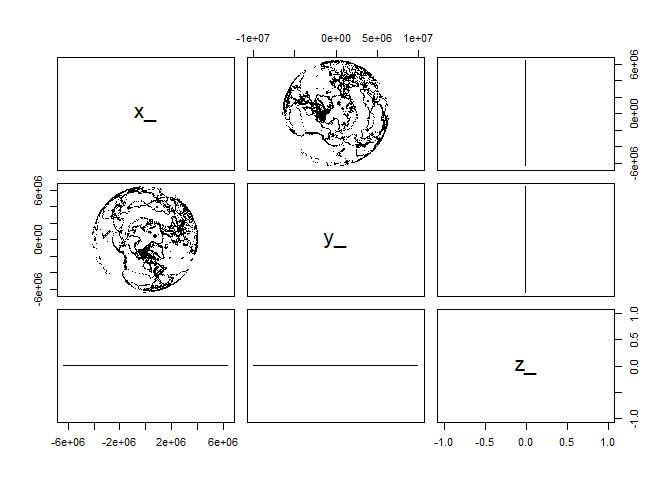

The goal of PROJ is to provide generic coordinate system transformations in R.
This is a shared goal with the reproj package, and PROJ provides the infrastructure for later versions of the underlying library.
PROJ provides basic coordinate transformations for generic numeric data in matrices or data frames. Transforming spatial data coordinates is a basic task independent of storage format.
PROJ is strictly for modern versions of the PROJ library.
We can use ‘auth:code’ forms, PROJ.4 strings, full WKT2, or the name of a CRS as found in the PROJ database, e.g ‘WGS84’, ‘NAD27’, etc. Full details are provided in the PROJ documentation.
Things to be aware of
- Input can be a data frame or a matrix, but internally input is assumed to be x, y, z, and time. So the output is always a 4-column list.
- You can’t use strings like “+init=epsg:4326” any more, it must be “EPSG:
”, and we use “OGC:CRS84” now. - You should know what your target projection is, and also what your source projection is. This is your responsibility.
- PROJ assumes longitude/latitude order always by setting the PROJ library context proj_normalize_for_visualization.
Please see PROJ library documentation for details on this.
Installation
On all systems do
install.packages("PROJ")or
remotes::install_cran("PROJ")To install the development version from Github do
remotes::install_github("hypertidy/PROJ")Example
Minimal code example, two lon-lat coordinates to LAEA, and back.
library(PROJ)
lon <- c(0, 147)
lat <- c(0, -42)
dst <- "+proj=laea +datum=WGS84 +lon_0=147 +lat_0=-42"
src <- "+proj=longlat +datum=WGS84"
## forward transformation
(xy <- proj_trans( cbind(lon, lat), dst, source = src))
#> $x_
#> [1] -8013029 0
#>
#> $y_
#> [1] -8225762 0
## inverse transformation
proj_trans(cbind(xy$x_, xy$y_), src, source = dst)
#> $x_
#> [1] 0 147
#>
#> $y_
#> [1] -3.194835e-15 -4.200000e+01
## note that NAs propagate in the usual way
lon <- c(0, NA, 147)
lat <- c(NA, 0, -42)
proj_trans(cbind(lon, lat), src, source = dst)
#> $x_
#> [1] NaN NaN 147.0018
#>
#> $y_
#> [1] NaN NaN -42.00038A more realistic example with coastline map data.
library(PROJ)
w <- PROJ::xymap
lon <- na.omit(w[,1])
lat <- na.omit(w[,2])
dst <- "+proj=laea +datum=WGS84 +lon_0=147 +lat_0=-42"
xy <- proj_trans(cbind(lon, lat), dst, source = "OGC:CRS84")
plot(xy$x_, xy$y_, pch = ".")
lonlat <- proj_trans(xy, src, source = dst)
plot(lonlat$x_, lonlat$y_, pch = ".")
Convert projection strings
We can generate PROJ or within limitations WKT2 strings, format 0, 1, 2 for WKT, proj4string, projjson respectively.
cat(wkt2 <- proj_crs_text("OGC:CRS84"))
#> GEOGCRS["WGS 84 (CRS84)",
#> ENSEMBLE["World Geodetic System 1984 ensemble",
#> MEMBER["World Geodetic System 1984 (Transit)"],
#> MEMBER["World Geodetic System 1984 (G730)"],
#> MEMBER["World Geodetic System 1984 (G873)"],
#> MEMBER["World Geodetic System 1984 (G1150)"],
#> MEMBER["World Geodetic System 1984 (G1674)"],
#> MEMBER["World Geodetic System 1984 (G1762)"],
#> MEMBER["World Geodetic System 1984 (G2139)"],
#> ELLIPSOID["WGS 84",6378137,298.257223563,
#> LENGTHUNIT["metre",1]],
#> ENSEMBLEACCURACY[2.0]],
#> PRIMEM["Greenwich",0,
#> ANGLEUNIT["degree",0.0174532925199433]],
#> CS[ellipsoidal,2],
#> AXIS["geodetic longitude (Lon)",east,
#> ORDER[1],
#> ANGLEUNIT["degree",0.0174532925199433]],
#> AXIS["geodetic latitude (Lat)",north,
#> ORDER[2],
#> ANGLEUNIT["degree",0.0174532925199433]],
#> USAGE[
#> SCOPE["Not known."],
#> AREA["World."],
#> BBOX[-90,-180,90,180]],
#> ID["OGC","CRS84"]]
proj_crs_text(wkt2, format = 1L)
#> [1] "+proj=longlat +datum=WGS84 +no_defs +type=crs"A geocentric example, suitable for plotting in rgl.
xyzt <- proj_trans(cbind(w[,1], w[,2]), z_ = rep(0, dim(w)[1L]), target = "+proj=cart +datum=WGS84", source = "OGC:CRS84")
plot(as.data.frame(xyzt[1:3]), pch = ".", asp = 1)
Geocentric transformations aren’t used in R much, but some examples are found in the quadmesh and anglr packages.
Please note that the PROJ project is released with a Contributor Code of Conduct. By contributing to this project, you agree to abide by its terms.